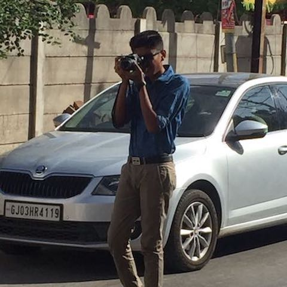
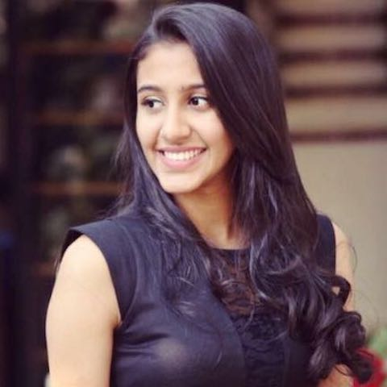
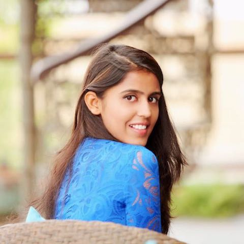
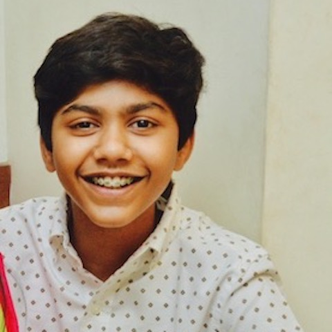
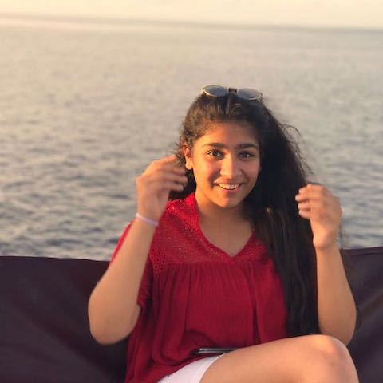
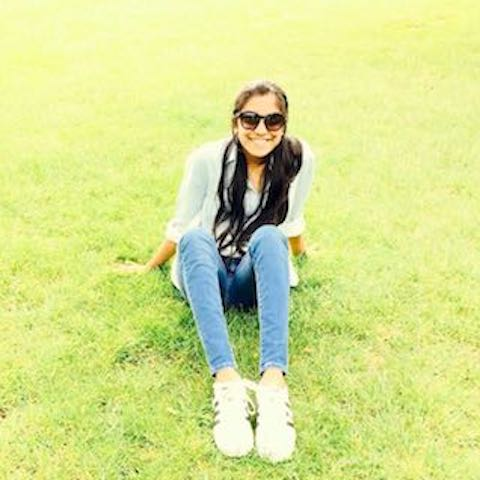

Secretariat

DSG: Aadesh Chhabra
He may not be that experienced but don't let that fool you. This guy is not all he seems to be; sweet and innocent on the outside but one hell of a diplomat in committee. He will run circles around anyone who attempts to defy him and is sure to bring his allies together in a way which no one has seen before.


USG Creativity: Aditi Gupta
She may be little in size, but has the mind of a genius. Her academic prowess is matched by no one. When it comes to logical reasoning and explanations, Aditi is the go-to person for everyone, boasting her sharp oratory skills as well as her quick thought process.


Crisis Director: Dhruv Khandelwal
A kind soul, with the determination of steel. He will not rest, until what is needed to be done, is done. A lover of mystery and thrills, he wields the pen like a mighty sword, letting his creativity captivate everyone. He is an enthusiast for the fast-paced. A dreamer, who has no problems putting plans into action. He walks the fine line between passionate and obsessed. And it is not his smarts that makes him revered. But rather it is the silent ambition underneath the layers of visibility, coupled with an unparalleled generosity, that does so.

USG IT: Dhruv Ramani
A perfectionist and a visionary, is what he is. He is the master of all trades, and forges his path towards being the best at what he does. He can successfully find his way around any obstacle, with his quick sense of wit and cunningness, and can baffle anyone anytime he wants. His smartness is what he thrives upon.

DSG: Eesha Agarwal
With her progressive thinking, passion, commitment, and communication skills – she's a born leader. A computer wizard and mathematical genius, Eesha has a bent for innovation and thinking out of the box. An avid debater with a passion for MUNing; her compassion and empathy combined with her persistent and patient attitude facilitate her to persevere towards comprehending and combating the problems faced by the world today, and MUNs present her with a platform to put that understanding to use. Combine this with her fierce nature and flair for skilful diplomacy, and we have before you the probable future President of the Security Council.

USG Finance: Harleen Kaur
Is it humanly possible to be a perfectionist and an adventurous dreamer?She's an all rounder, name anything and she'll be a master at it. With these extra-ordinary talents, she still possess certain qualities that differentiates her from everybody. She's humble human with a generous soul!

USG Photography: Jhanvi Koolwal
She is always ready to click, catching all the perfect moments she finds interesting. Always bringing her camera, our wonderful explorer. Along with her passion for photography, she's caring, energetic and ready to work displaying true dedication. Her friendly and happy qualities are like a spark to her lovely personality and expert skills.
DSG: Khushi Mehra
She is a born achiever, an epitome of confidence, and an exceptional communicator. She although in possession of extraordinary talent, stays true to her roots, and is friendly and approachable to the core. Possess great rhetoric skills and a natural knack for MUNing and specially crisis committees.


USG Logistics: Mohammad Darvish
A name that is synonymous with excellence, and also sends a shiver down everybody’s spine in the room.Known among his peers as a sly lobbyist, an influential speaker, a meticulous policy writer and most of all for the quality of his work.While MUNs were his first love, he does have many other passions and skills. He is also an avid programmer who has worked with Waymo and Terasology to name a few.

USG Delegate Affairs: Nakshatra Panicker
Known for her amazing personality and an impeccable talent for making friends, this girl is definitely one of the friendliest people around. She is always willing to lend a helping hand and that is the reason we are proud to call her one of our USG.

USG Finance: Nishtha Nanda
She has the ability to cross everyone who doubts her. A magnetic personality, someone who radiates confidence and charisma, she can be defined as a dreamer. Along with having an artistic mind her brain works equally well in debating. She is passionate and approachable to the core.
Crisis Director: Paarth Chopra
He has the ability to think on the spot and is the most practical of them all. He has an inborn talent for debating and his imaginative power has no bounds.

USG Delegate affairs: Priyanshi Agarwal
Known for her benevolent nature and behaviour, Priyanshi is a silent worker who is proficient in handling all circumstances and problems. She is extremely passionate yet, approachable to everyone.

USG Photography: Raashi Agarwal
With extraordinary visions and immense talent, Raashi creates surreal magic in her surroundings. She's a tech wizard who charms everyone, be it behind the camera on in front of the screen. Her hard work and devotion towards photography has no limit.

DSG: Rehan Kapur
The person who is known to be subtly savage. A nice person with a dangerous mind, boasting of confidence and candour. Rehan over here is a MUN wiz, with the ability to wipe out anyone who crosses him. Even though he may be brutal, he is also one of the most approachable and sweet people you will ever meet. He is kind and will let out a helpful hand whenever needed. In conclusion all he believes in is to FIGHT ON. We call him the GA King

USG Media: Ribhav Kala
He brings in an intense spark of passion in his work arena. Eye for detailing and imagining are his forte. His logical and convincing thoughts progressing onto his compositions motivate and inspire him to bring in competition with himself. Creating, structuring and defining new boundaries in the sphere of graphic designing and photography autograph as his principal interests.

USG Photography: Ridhima Agarwal
She's always excited. Right there by your side to fill you up with optimism and pack your faces with wide smiles. Understandable, a caring human being helping you till the end. As a respected individual, Ridhima is ready to listen and learn rather than just talk. With a twinge of photography in her and compassionate heart-warming soul, she displays the true qualities of a wonderful human being.

DG Sameera Singh
With a passion for weaving words into stories, she has aimed to build a bridge between a commoner and those who struggle to get by each day. " The impavdo" - she is rebellious, fierce and has a natural knack for debating. With her driven souls and desire to always move with the flow

USG Creativity: Sanskruti Sharma
This girl is like no other, she's a wizard with a brush and a master with a pen. She can illustrate even the toughest ideas on a canvas, which is the reason we call her our head of creativity. She's an exemplar of confidence and her uber friendly personality makes her approachable to all.

OC HEAD: Shreeum Rakheja
She views the world from a different perspective, one that makes you feel inferior of how limited your understanding is. She has proved everyone wrong, not once or twice but innumerable times, showcasing her intelligence, charisma and diligence. From being a dictator to being a supportive friend, she is the go to person.

USG Delegate affairs: Shubh Baheti
Modest and approachable, Shubh epitomises benevolence and creativity. Full of boundless energy and enthusiasm, she is the ultimate optimist. So if you're looking for somebody insightful with exceptional interpersonal skills.

USG Creativity: Suhani Garg
Her silence is fascinating, Suhani believes in walking the talk, going down the avenue of creativity. Ms. Garg isn't aware about the concept of coming second, making sure she excels in anything she puts her mind to. With her imagination she conveys beautiful messages through the medium of paint and paper, astounding everyone who so ever doubts her.


USG Finance Vansh Jain
He just stunned us all, and made his way into the game. He calls himself madover_vanshjain, but what one really needs to be mad about is his dedication, hardwork and enthusiasm. From being a silent work he defies everyone who tries to doubt his ability to reach the top. He is someone who has a natural knack for finance and will do wonders in the same.


USG IT: Ishaan Malhotra
'Kill them with success and bury them with a smile' is a moto he lives by. A computer and a math wiz, this personality is a silent worker who is adept at complex problem solving. He promises diligence and passion in whatever he does. But before that, this personality is one of the friendliest, liveliest and yes, tallest in our team.

SG: Ragini Goyal
Not only is she the human epitome of devotion, she is also an extremely serene person with a rational style of dealing with things. Her sense of team spirit and responsibility is what makes her the support system.